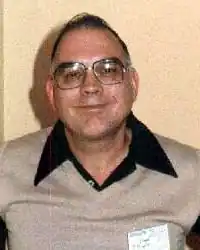
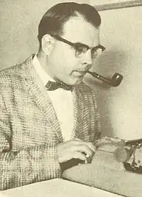

Ллойд БІГГЛ-молодший
Американський письменник і музикознавець, автор романів "Тиха, вкрадлива дріб барабана", "Пам'ятник", "Злі Есперо", "Лють з часів", "Світло, якого не було", серіалу про детектива Яні Дарзеке, засновник і президент "Товариства усній історії фантастики ".
Головною справою життя Ллойда Біггла-молодшого стала музика і тільки потім — наукова фантастика, в тематиці якої музика займає також чимале місце. Біггл народився в 1923 році в містечку Ватерлоо в США. Другу Світову війну провів на фронті, служив сержантом зв'язку і був двічі поранений. Його друга рана, шрапнеллю в ногу, отримана на Ельбі в кінці війни, зробила його інвалідом. Після війни Біггл продовжив освіту. Він закінчив університет Уейна, захистив дисертацію по музикознавства і викладав цю ж дисципліну в Університеті Мічигану і в Східно-Мічиганському Університеті в п'ятдесятих. Писати наукову фантастику почав з 1955 року, а з 1963 року, після виходу його роману "Всі кольори пітьми", став професійним письменником і залишався таким до самої смерті. І наукова фантастика, і детективи Біггла отримали світове визнання. Він став відомий як автор, який приніс естетику в жанр, відомий своїми технологічними описами. У його романах і розповідях часто використовуються музичні і артистичні теми. Поет-пісняр Джим Вебб і письменник Орсон Скотт Кард зізнавалися, що в юності на них справив величезний вплив розповідь Біггла "Музикодел". Ллойд Біггл-молодший В області детективної літератури він написав два романи про Шерлока Холмса від імені його помічника з Бейкер-стріт, Едварда Портера Джонса, і ряд оповідань, об'єднаних головною героїнею — леді Сарою Варнлей. Одного разу він сказав: "Я можу писати швидше, ніж журнали можуть мене видавати". І дійсно, журнали продовжували видавати розповіді Біггла ще два роки після його смерті. У 1965 році Біггл став першим секретарем-скарбником Асоціації американських письменників-фантастів, а потім багато років був її головою. У 70-х він заснував Асоціацію усної історії наукової фантастики (SFOHA), яка створила архів з сотень стрічок і касет виступів письменників-фантастів і обговорень їх ремесла. Багато з особливо цінних записів перераховані в його статті "Згадував Айзек Азімов", опублікованій в 2002 році в журналі "Аналог". Він помер в 2002 році, після двадцятирічного битви з лейкемією і раком.